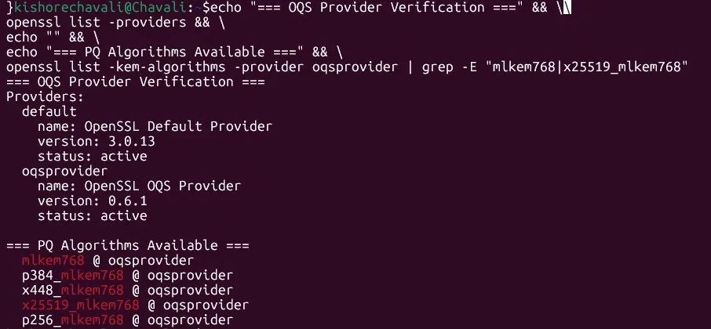
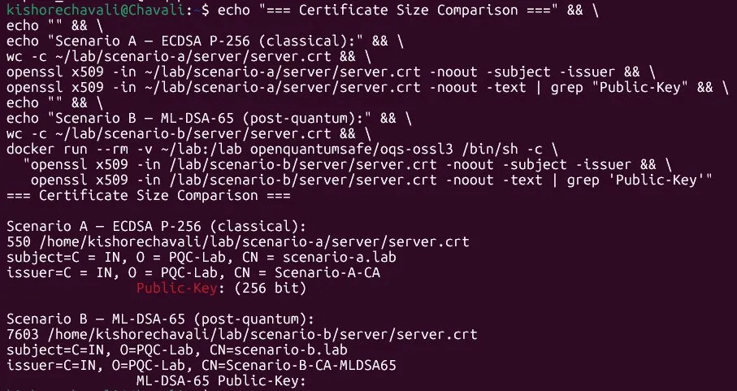
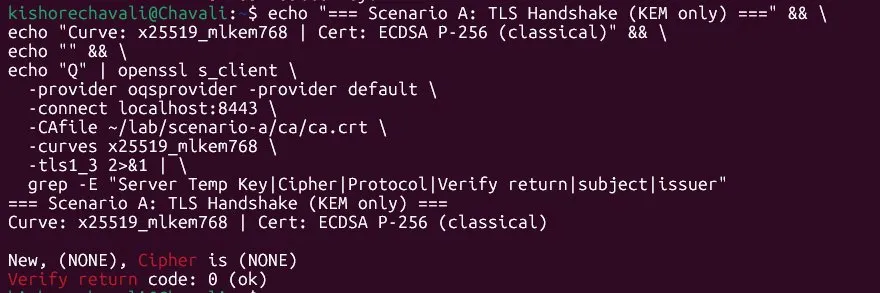
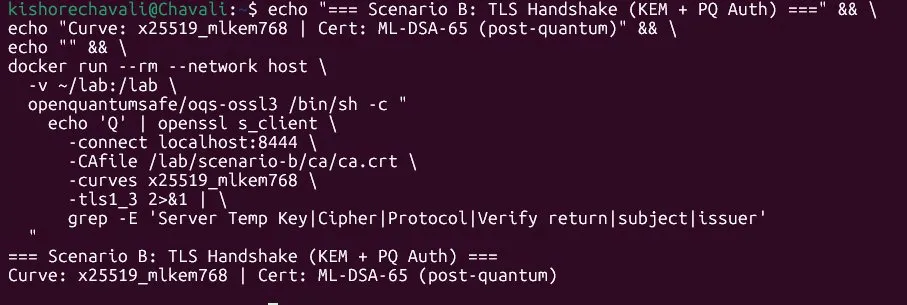
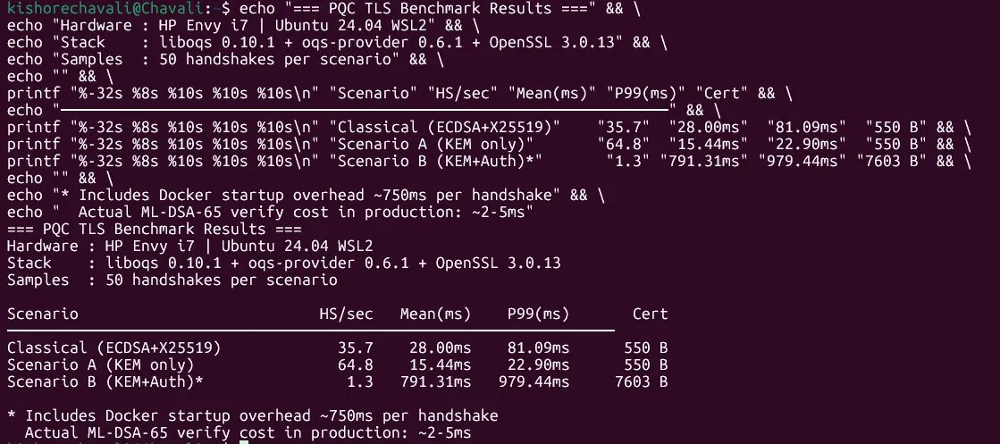
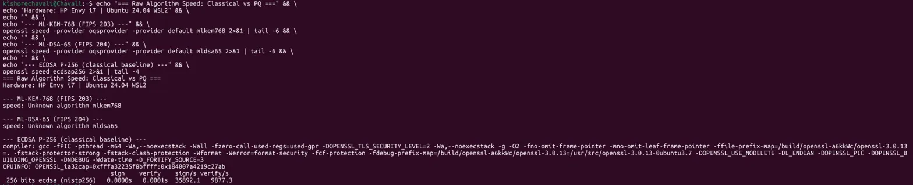

Over the last few months I have been immersed in PQC from every angle imaginable. NIST, CNSA, UK NCSC, CISA and other standards and regulatory bodies, crypto agility frameworks published by cryptography and quantum-safe experts, position papers, vendor whitepapers, cryptographic posture management platforms, and discovery and inventory tooling — I have read through most of it. The volume and breadth of material reflects two things simultaneously: how seriously the industry is taking this shift, and how much noise has gathered around a genuinely important problem.
What struck me was the sheer range of signals coming in at once: genuine technical urgency sitting right next to significant marketing hype, real prioritisation problems buried under an avalanche of "harvest now, decrypt later" anxiety, and vendors pitching discovery tools before most organisations even have a clear view of what they are trying to discover.
Somewhere in the middle of all that, a few practical questions kept surfacing:
What actually needs to happen first?
What is the minimum viable migration step that builds momentum without requiring a full PKI overhaul?
And what do these algorithms actually cost at the TLS handshake level — on real hardware, not in a vendor benchmark?
Discovery and inventory are clearly foundational — you cannot migrate what you have not mapped. But I wanted to go a step further and understand the migration patterns themselves: what is genuinely easy to do today, what requires planning, and where the real operational cost lies.
So I set up a small lab on my personal HP Envy i7, built the Open Quantum Safe stack from source, generated both classical and post-quantum certificate chains, and ran two distinct TLS migration scenarios against each other. What follows are the actual results — commands, screenshots, handshake output, and benchmark numbers — with no vendor involvement and no synthetic environment.
Everything runs on Ubuntu 24.04 (WSL2 on Windows 11) on the HP Envy i7 — no cloud, no dedicated server. The core components are the Open Quantum Safe project's liboqs 0.10.1 and oqs-provider 0.6.1, which bridges liboqs into OpenSSL's provider architecture. Scenario B runs inside the openquantumsafe/oqs-ossl3 Docker image due to a PEM encoding limitation in OpenSSL 3.0.x that prevents post-quantum hybrid keys from being written to disk in standard format.

# Build liboqs — core PQ algorithm library git clone --depth 1 --branch 0.10.1 https://github.com/open-quantum-safe/liboqs.git cmake -GNinja -B build -DOQS_USE_OPENSSL=ON -DBUILD_SHARED_LIBS=ON -DOPENSSL_ROOT_DIR=/usr ninja -C build && ninja -C build install # Build oqs-provider — bridges liboqs into OpenSSL 3.x provider API git clone --depth 1 --branch 0.6.1 https://github.com/open-quantum-safe/oqs-provider.git cmake -GNinja -B build -Dliboqs_DIR=/usr/local/lib/cmake/liboqs ninja -C build sudo cp build/lib/oqsprovider.so /usr/lib/x86_64-linux-gnu/ossl-modules/
I tested two distinct migration paths that reflect the actual decision enterprises face today.
In TLS, there are two distinct cryptographic functions that need to be addressed on the road to quantum safety. The first is key exchange — the mechanism by which client and server agree on a shared secret at the start of every connection. The second is authentication — how the server proves its identity to the client using a certificate signed by a trusted authority. Today, both rely on classical algorithms that a sufficiently capable quantum computer could break. They require separate migration strategies, carry different risk timelines, and have very different operational costs. That is exactly what these two scenarios test.
The existing classical certificate is still used to authenticate the server — so public key cryptography remains classical. However, the shared secret established during the handshake is generated using ML-KEM-768, making it quantum-safe. This directly addresses the Harvest Now, Decrypt Later (HNDL) threat, where adversaries intercept and store encrypted traffic today with the intent to decrypt it once a quantum computer is available.

| Certificate | Algorithm | Size | Ratio |
|---|---|---|---|
| Scenario A server cert | ECDSA P-256 | 550 B | baseline |
| Scenario B server cert | ML-DSA-65 (FIPS 204) | 7,603 B | 13.8× |


50 handshakes per scenario, loopback interface, measured end-to-end with Python time.perf_counter().

| Scenario | HS/sec | Mean | P99 | Cert |
|---|---|---|---|---|
| Classical (ECDSA + X25519) | 35.7 | 28.00ms | 81.09ms | 550 B |
| Scenario A — KEM only | 64.8 | 15.44ms | 22.90ms | 550 B |
| Scenario B — KEM + Auth * | 1.3 | 791.31ms | 979.44ms | 7,603 B |

| Standard | Algorithm | Purpose |
|---|---|---|
| FIPS 203 | ML-KEM (Kyber) | Key encapsulation — replaces ECDH |
| FIPS 204 | ML-DSA (Dilithium) | Digital signatures — replaces ECDSA/RSA |
| FIPS 205 | SLH-DSA (SPHINCS+) | Stateless hash-based signatures |
| IETF TLS hybrid | X25519MLKEM768 | Hybrid KEM for TLS 1.3 key exchange |
Tools: liboqs 0.10.1 · oqs-provider 0.6.1 · OpenSSL 3.0.13 · Docker (openquantumsafe/oqs-ossl3) · Python 3 · matplotlib · tshark · Ubuntu 24.04 WSL2